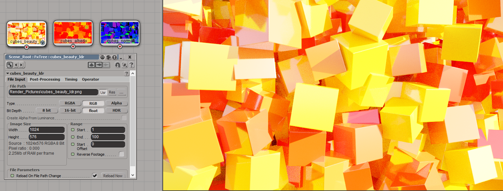

FX Denoise v.1.2
Last update: 27.05.2021
Description: This is the FX Tree node for denoising images, which rendered by ray-traced renderer (Arnold, Cycles, LuxRender, Indigo Render and so on). This node implement Intel Open Image Denoise library.
Download: FX Denoise archive, sources on the GitHub
How to install: Nodes for FX Tree can't be installed by using general *.xsiaddon file. Instead you should make the following steps:
- Step 1. Extract archive anywhere.
- Step 2. Copy the FX_Denoise.dll file into C:\Users\user_name\Autodesk\Softimage_2015\Application\fx\ufos\ folder. All nodes inside this folder will appear in Plugins [U] category.
- Step 3. Copy OpenImageDenoise.dll and tbb12.dll files into C:\Program Files\Autodesk\Softimage 2015\Application\bin folder.
- Optional step. Also the addon requires vc14 runtime in your system. If you does not have it, download Visual C++ Redistributable for Visual Studio 2015 package from here and install it (or google by keywords "vc14 runtime").
How to use: Step 1: switch layout to Compositing
Step 2: add node for loading image by choosing Ops - Image - File Input
Step 3: select any image. Switch it Type to RGB and Bit Depth to float. Also you can add additional albedo pass and normal pass
Step 4: add denoising node by choosing Ops - Plugins [U] - FX Denoise

Step 5: connect loaded images to inputs of the denoising node. The first input is for color (beauty pass), second for the albedo (diffuse color pass) and the third for the normal. Denoising node contains five parameters:
- HDR should be turned on if the loaded image has a hdr-format (*.exr, *.tiff and so on)
- sRGB should be turned on if the image has a ldr-format (*.png, *.jpg and so on) and contains gamma correction. It's important to use proper values for this setting (and also for HDR), because otherwise denoising will produce additional artifacts
- Set Affinity is more technical parameter, for stability purpose it should turned off
- Clean Secondary Maps should be turned on, if albedo and normal passes does not contains noise. If these passes noised, then this parameter should be turned off, and in this case the system will denoise these passes and after that denoise the main image
- Weights Path is a full path to the *.tza file, which contains custom data for denoising neural network. How to generate this data explains on the OpenImageDenoise GitHub page. This parameter is optional